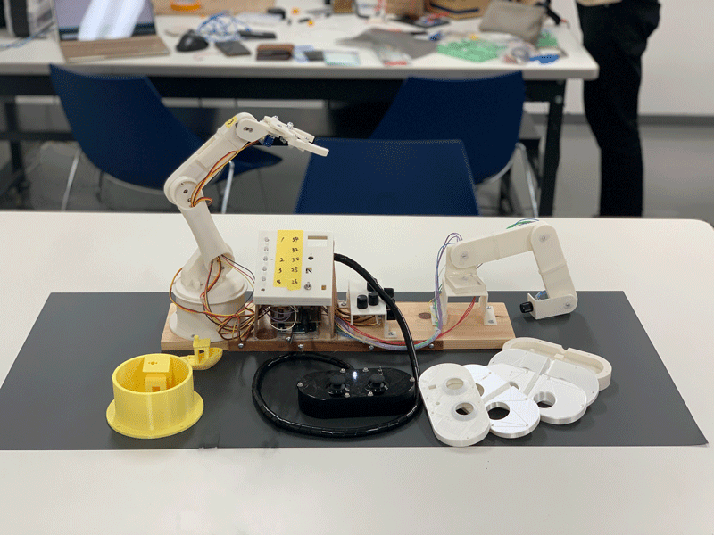
1.作品説明
| 基本情報 | |
|---|---|
| 出展者番号 | RO42-008 |
| 作品名 | 汎用ロボットアーム |
| グループ名 | ESP32 |
| メンバーリスト | 佐藤 航 / 洪 イ昕 / 兒玉 裕貴 |
| 作品アピール | 多種多様な操作(リモコン操作/ボリューム操作/位置記憶操作/ネットワーク操作(Internet of Things: 略称 IoT 操作))を実現したロボットアーム |
【プロジェクトの背景】
今回のHEWではグループメンバ各個人が制作したいものを組み合わせて一つの作品を作ることを目標に制作しました。 役割分担に重点を置き、一人は詳細な3Dモデルの制作, 二人目は操作方法の策定, 三人目はプログラムの策定, これらを軸にしそれぞれが意見を出し合い、個人の実力を一番発揮できるところでそれぞれが個々に制作する。また相手の意見をできるだけ取り入れどうしたら実現できるかに注視しながら作業し、その結果できるだけアイディアに忠実な制作物が完成しました。
2.アピールポイント
一番のアピールポイントとして複数の操作方法に力を入れました。４つの操作方法があります。
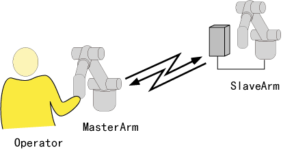 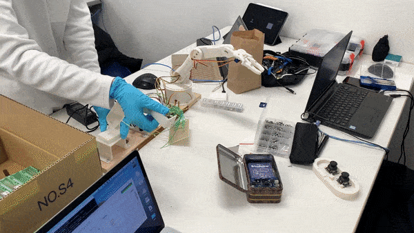

See the Pen RO42-008 by hirotaka42 (@hirotaka42) on CodePen.
【3Dモデルデータ】
今回は3DCADソフト Fusion360 を使用し3Dモデルデータを作成,3Dプリンタで印刷,すべての部品を手作りで制作しました。その過程で穴の位置の設置ミスや印刷クオリティの向上で四苦八苦することがありました。
| 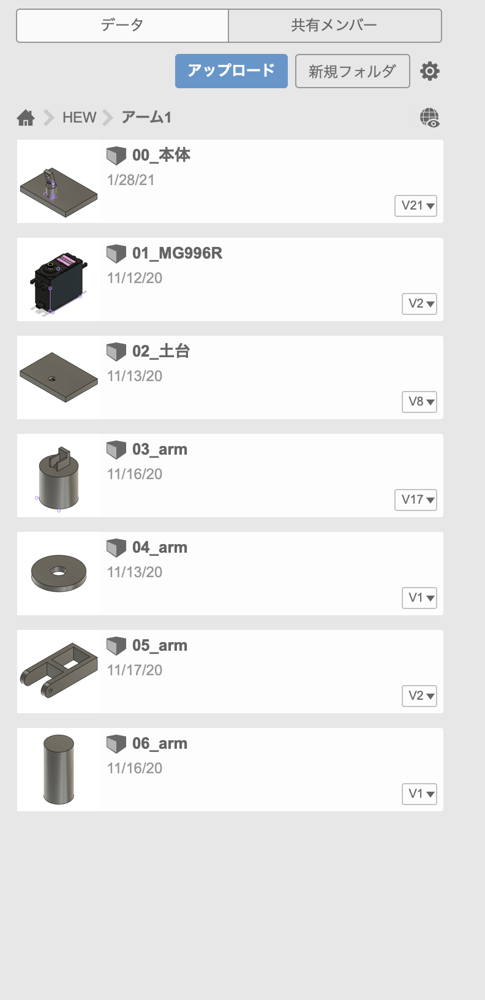 | 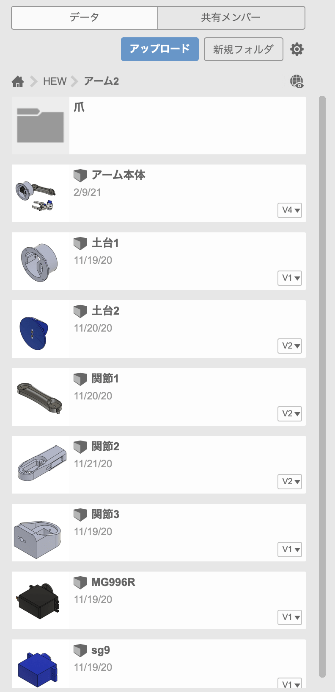 | 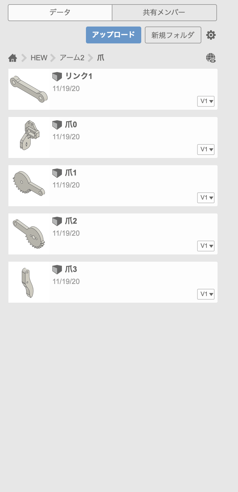 |
| 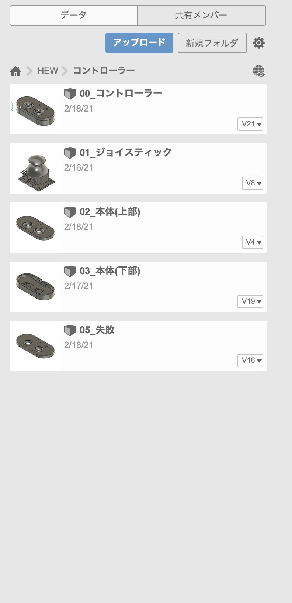 | 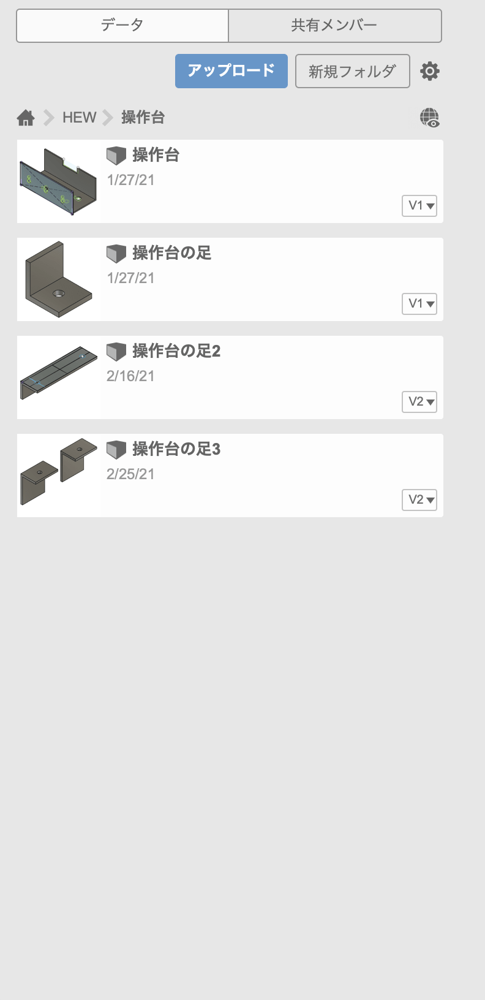 | 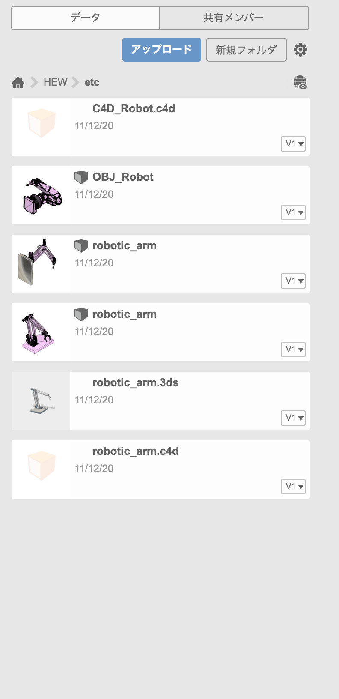 |
【基盤配線】
配線については電源系統を一つにまとめできるだけ簡素化しました。また配線の再配置など柔軟に対応するべく広く一般的に使用されているJST規格のXHコネクタを採用
| 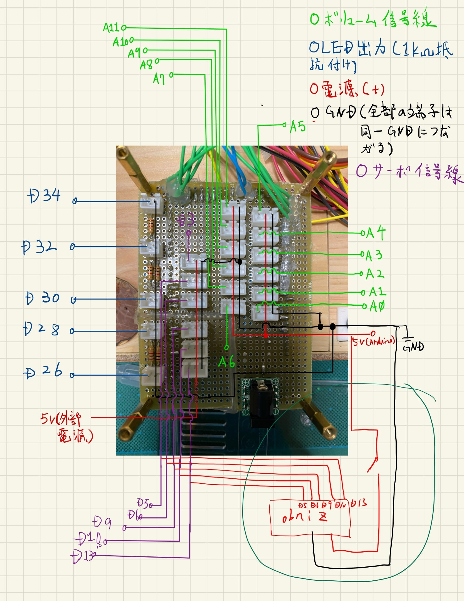 | 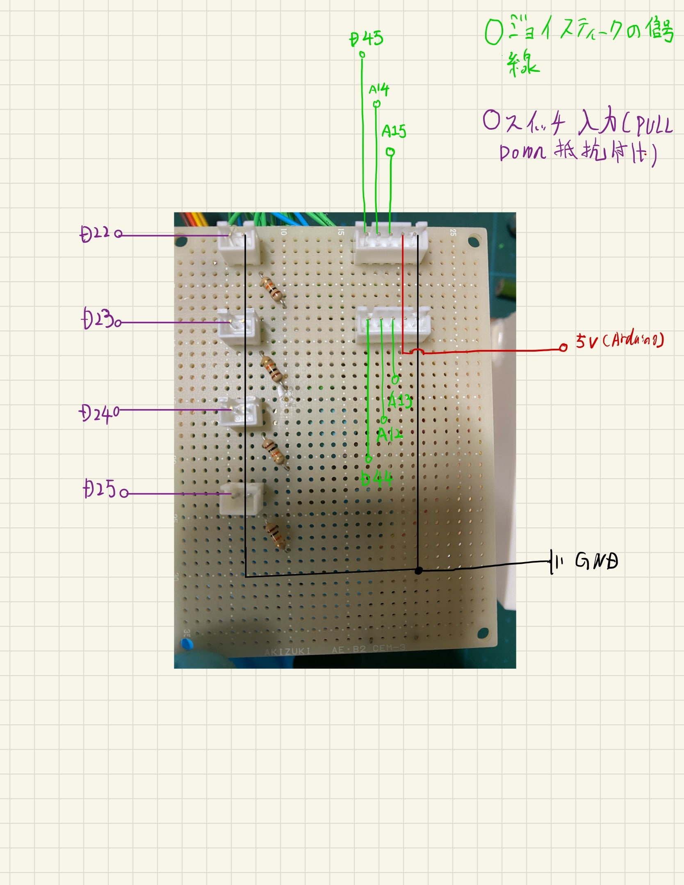 |
感想
今回のHEWは例年と違いオンラインでの制作が多かったためお互いの進捗確認がうまく取れずとても苦労しました。ですが精一杯自分たちに納得の行く作品ができたのでとても良い経験になりました！